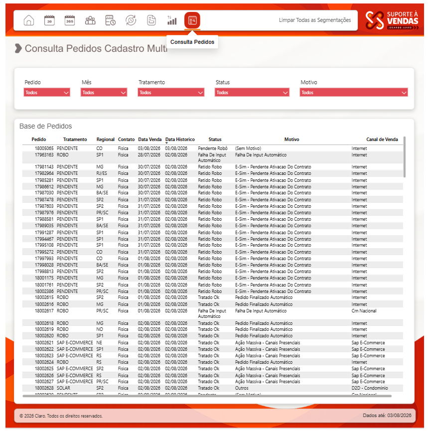

Power BI
Desenvolvimento de dashboards, indicadores, visualizações e análises.
IntermediárioOLÁ, EU SOU
Transformo dados em informações claras, indicadores e soluções que apoiam decisões e tornam processos mais eficientes.
SOBRE MIM
Sou analista de processos e desenvolvedor de soluções. Utilizo Excel, Power BI, VBA e Python para transformar rotinas manuais em processos mais simples, confiáveis e eficientes.
HABILIDADES
Desenvolvimento de dashboards, indicadores, visualizações e análises.
IntermediárioTratamento, organização e análise de dados para controles e indicadores.
AvançadoManipulação e análise de dados com foco em soluções práticas.
IntermediárioAutomação de tarefas e processos repetitivos.
BásicoBase para desenvolvimento e resolução estruturada de problemas.
AvançadoFormação Wizard by Pearson com 420 horas.
IntermediárioCOMO EU TRABALHO
Mapear a rotina, identificar o desafio e compreender onde existe oportunidade de melhoria.
Organizar a informação, reduzir a complexidade e transformar o problema em uma solução objetiva.
Criar automações, relatórios, dashboards e ferramentas que deixam o trabalho mais simples e confiável.
CARREIRA
Atuação em automação, processos e melhoria contínua para tornar o trabalho mais simples e confiável.
Mapeamento de processos e desenvolvimento de automações em VBA e Python, com dashboards em Excel e Power BI para apoio à decisão.
Melhoria de fluxos, automações com VBA, Python e Selenium, além de indicadores automatizados para suporte estratégico.
Atuação em logística com foco em processos, dashboards, automações em VBA e Python, e suporte com WMS e SAP.
PROJETOS



Dashboards para acompanhamento de indicadores e apoio à tomada de decisão.


Soluções personalizadas para simplificar processos e rotinas de trabalho.

Planilhas inteligentes para controle, organização e produtividade.
FORMAÇÃO & CERTIFICAÇÕES
UniCesumar
Universidade Paulista
CONTATO
Para oportunidades profissionais, projetos ou troca de ideias sobre dados e automação, entre em contato pelo canal que preferir.
Responderei assim que possível.